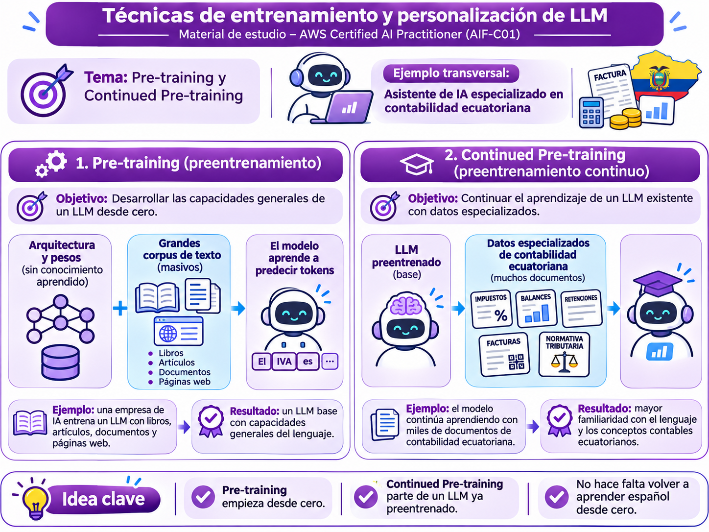

UNIDAD 8
Bloque 6 · Entrenamiento y personalización de LLM
Bloque 6 · Página 2 de 6 · Infografía
Pre-training y Continued Pre-training
Compara entrenar desde cero frente a continuar el entrenamiento de un LLM existente.

← Anterior
Siguiente →